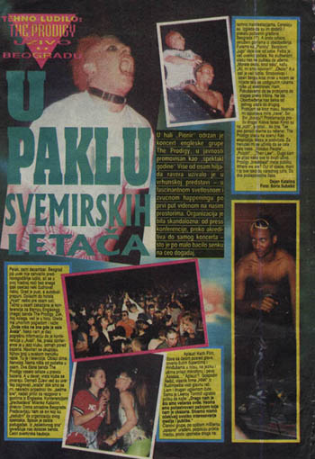

Ko je prvi video tehno?
Knjiga Guerrilla Radio - Rock'n'Roll Radio and Serbia's Underground Resistance bavi se i periodom s kraja 1994. i početkom 1995. kad se u sred mrkle noći života u Srbiji pojavio tehno i tehno kultura da malo razveseli stvari. Tj. bar nekim ljudima bar na neko vreme.
U njegovom opisu to izgleda ovako:
Kozmik and rival DJ collective Integra both began to fly in DJs from the UK, Germany and America. In the absence of any other real contact with youth culture from 'outside' - the only decent bands who played in Belgrade in the mid-nineties were The Prodigy and Holland's Urban Dance Squad - the parties represented a lifeline to another kind of existence. In the rest of Europe, the rave scene was an attempt to create free space to dream and play; in belgrade, like rock'n'roll, it symbolised the refusal to accept isolation and xenophobia; an unspoken opposition to the dominant cultural order.
A ako je sve to bilo dovoljno čudno za Beograd, sto km jugozapadno u gradu od šezdeset hiljada ljudi bilo je revolucija. Na nivou noćnog života, naravno.
Tehno je u Valjevo zvanično stigao 11. februara 1995. zableženo je u Reviji Kolubara. Događaj se desio u Domu Kulture, a prisustvovalo je oko 500 ljudi. Stilski to je izgledalo ovako: "Bilo je i naočara, marama, ekscentričnih šešira, iscrtanih lica, sasvim dugih i sasvim kratkih haljina, streča, šarenih majica..."
Ostale utiske prenosi Alt. X, alias Ljube iz Srbije:
"Podijumi za igru, postavljeni na sredinu sale, prepuni razigranih rejvera su scena koja teško da se mogla ranije videti u ovom gradu. bina, odvojena mrežom od ostakta prostora, sa monitorima na kojima se vrtela kompjuterska animacija, delovala je futuristički. Sprava koja ispušta balone je samo nagoveštaj onoga što se uskoro može očekivati: laseri, magla, sneg, pena."
I još: "Nije se svima svidela sva ta vriska, prividni haos; kada su se ostala mesta za izlazak zatvorila, mnogi su svratili da vide šta se to događa u Domu omladine. S vremena na vreme, po uglovima su se mogli čuti komentari tipa: "Sve to treba razjuriti", ali su sigurno čak i takvi osetili ba malo od ogromne količine oslobođene pozitivne energije."
Što se mene tiče, tehno sam uvek volela umereno, pa i sada, iako sam na ovakva dešavanja išla svega nekoliko puta, ali je ta priča u kontekstu Srbije devedesetih bila mnogo više od vrste muzike. Tek kad sam posle toga išla u Bremen i videla koliko je to tamo mainstream muzika i stil oblačenja za skoro sve mlade mogla sam da stvarno vidim koliko smo mi nešto drugo...
 RSS feed
RSS feed
 sadržaji se objavljuju pod
sadržaji se objavljuju pod
Moj prvi dodir sa tehno muzikom, tacnije rejvom kao pojavom, bio je 1993 na Akademiji; tamo su isle tehno veceri, cini mi se nedeljom. Zanimljivo je da je tehno istom silinom udario provinciju kao Beograd...i to, vise-manje, u isto vreme.